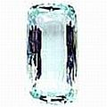

Cuidado Dentário & Higiene Oral
Conservando dentes e boca limpos de maneiras naturais, não-tóxicas
A conservação de dentes e boca limpos de forma natural, não-tóxica pode ser (e segundo algumas autoridades que "o sabem" e também alguns poderosos testemunhos, É) uma contribuição importante à saúde (continuada ou melhorada) dos dentes.